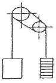
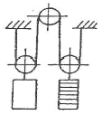
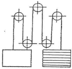
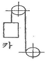
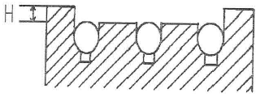
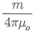
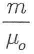
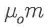
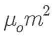

승강기기능사 (2015-07-19 기출문제)
1과목: 승강기개론
1. 에스컬레이터의 핸드레일(Hand Rail)의 속도는 어떻게 하고 있는가?
- 30m/min 이하로 하고 있다.
- 45m/min 이하로 하고 있다.
- 발판(step)속도의 ⅔ 정도로 하고 있다.
- 발판(step)속도와 같게 하고 있다.
(정답률: 81%)

2. 유압식 승강기의 종류를 분류할 때 적합하지 않은 것은?
- 직접식
- 간접식
- 팬터그래프식
- 밸브식
(정답률: 76%)
3. 다음 중 엘리베이터 도어용 부품과 거리가 먼 것은?
- 행거롤러
- 업스러스트롤러
- 도어레일
- 가이드롤러
(정답률: 53%)
4. 균형로프(Compensating Rope)의 역할로 적합한 것은?
- 카의 낙하를 방지한다.
- 균형추의 이탈을 방지한다.
- 주로프와 이동케이블의 이동으로 변화된 하중을 보상한다.
- 주로프가 열화되지 않도록 한다.
(정답률: 77%)
5. 교류 2단속도 제어에 관한 설명으로 틀린 것은?
- 기동시 저속권선 사용
- 주행시 고속권선 사용
- 감속시 저속권선 사용
- 착상시 저속권선 사용
(정답률: 54%)
6. 주차구획을 평면상에 배치하여 운반기의 왕복 이동에 의하여 주차를 행하는 방식은?
- 평면 왕복식
- 다층 순환식
- 승강기식
- 수평 순환식
(정답률: 76%)
7. 승객용 엘리베이터의 적재하중 및 최대정원을 계산할 때 1인당 하중의 기준은 몇 kg 인가?(관련 규정 개정전 문제로 여기서는 기존 정답인 2번을 누르면 정답 처리됩니다. 자세한 내용은 해설을 참고하세요.)
- 63
- 65
- 67
- 70
(정답률: 86%)
8. 가변 전압 가변 주파수(VVVF) 제어방식에 관한 설명 중 틀린 것은?
- 고속의 승강기까지 적용 가능하다.
- 저속의 승강기에만 적용하여야 한다.
- 직류 전동기와 동등한 제어 특성을 낼 수 있다.
- 유도 전동기의 전압과 주파수를 변환시킨다.
(정답률: 72%)
9. 레일의 규격호칭은 소재 1m길이당 중량을 라운드 번호로 하여 레일에 붙여 쓰고 있다. 일반적으로 쓰이고 있는 T형 레일의 공칭이 아닌 것은?
- 8K레일
- 13K레일
- 16K레일
- 24K레일
(정답률: 86%)
10. 엘리베이터 기계실에 관한 설명으로 틀린 것은?
- 기계실이 정상부에 위치한 경우 꼭대기 틈새의 높이는 2m 이상의 높이를 두어야 한다.
- 기계실의 크기는 승강로 수평투영면적의 2배 이상으로 하는 것이 적합하다.
- 기계실의 위치는 반드시 정상부에 위치하지 않아도 된다.
- 기계실이 있는 경우 기계실의 크기는 승강로의 크기와 같아야 한다.
(정답률: 72%)
11. 유압 엘리베이터의 압력 릴리프 밸브는 압력을 전부하압력의 몇 % 까지 제한하도록 맞추어 조절해야 하는가?
- 115
- 125
- 140
- 150
(정답률: 62%)
12. 승강기에 사용하는 가이드 레일 1본의 길이는 몇 m로 정하고 있는가?
- 1
- 3
- 5
- 7
(정답률: 65%)
13. 기계실의 작업구역에서 유효 높이는 몇 m 이상으로 하여야 하는가?(관련 규정 개정전 문제로 여기서는 기존 정답인 2번을 누르면 정답 처리됩니다. 자세한 내용은 해설을 참고하세요.)
- 1.8
- 2
- 2.5
- 3
(정답률: 84%)
14. 정지로 작동시키면 승강기의 버튼등록이 정지되고 자동으로 지정 층에 도착하여 운행이 정지 되는 것은?
- 리미트 스위치
- 슬로다운 스위치
- 파킹 스위치
- 피트 정지 스위치
(정답률: 66%)
15. 엘리베이터 완충기에 대한 설명으로 적합하지 않는 것은?(관련 규정 개정전 문제로 여기서는 기존 정답인 4번을 누르면 정답 처리됩니다. 자세한 내용은 해설을 참고하세요.)
- 정격속도 1m/s이하의 엘리베이터에 스프링 완충기를 사용하였다.
- 정격속도 1m/s초과의 엘리베이터에 유입완충기를 사용하였다.
- 유입완충기의 플런저 복귀시험은 완전히 압축한 상태에서 완전 복귀할 때까지의 시간은 120초 이하이다.
- 유입 완충기에서 최소적용중량은 카 자중 + 적재하중으로 한다.
(정답률: 79%)
2과목: 안전관리
16. 에스컬레이터의 역회전 방지장치가 아닌 것은?
- 구동체인 안전장치
- 기계 브레이크
- 조속기
- 스커드 가드
(정답률: 68%)
17. 로프이탈방지장치를 설치하는 목적으로 부적절한 것은?
- 급제동시 진동에 의해 주로프가 벗겨질 우려가 있는 경우
- 지진의 진동에 의해 주로프가 벗겨질 우려가 있는 경우
- 기타의 진동에 의해 주로프가 벗겨질 우려가 있는 경우
- 주로프의 파단으로 이탈할 경우
(정답률: 68%)
18. 평면의 디딤판을 동력으로 오르내리게 한 것으로, 경사도가 12°이하로 설계된 것은?
- 에스컬레이터
- 수평보행기
- 경사형 리프트
- 덤웨이터
(정답률: 72%)
19. 카내에 승객이 갇혔을 때의 조치할 내용 중 부적절한 것은?
- 우선 인터폰을 통해 승객을 안심시킨다.
- 카의 위치를 확인한다.
- 층 중간에 정지하여 구출이 어려운 경우에는 기계실에서 정지층에 위치하도록 권상기를 수동으로 조작한다.
- 반드시 카 상부의 비상구출구를 통해서 구출한다.
(정답률: 75%)
20. 높은 열로 전선의 피복이 연소되는 것을 방지하기 위해 사용되는 재료는?(관련 규정 개정전 문제로 여기서는 기존 정답인 2번을 누르면 정답 처리됩니다. 자세한 내용은 해설을 참고하세요.)
- 고무
- 석면
- 종이
- PVC
(정답률: 83%)
21. 승강기 안전점검에서 신설·변경 또는 고장수리 등 작업을 한 후에 실시하는 것은?
- 사전점검
- 특별점검
- 수시점검
- 정기점검
(정답률: 65%)
22. 작업표준의 목적이 아닌 것은?
- 작업의 효율화
- 위험요인의 제거
- 손실요인의 제거
- 재해책임의 추궁
(정답률: 85%)
23. 감전의 위험이 있는 장소의 전기를 차단하여 수선, 점검 등의 작업을 할 때에는 작업 중 스위치에 어떤 장치를 하여야 하는가?
- 접지장치
- 복개장치
- 시건장치
- 통전장치
(정답률: 45%)
24. 방호장치에 대하여 근로자가 준수할 사항이 아닌 것은?
- 방호장치에 이상이 있을 때 근로자가 즉시 수리한다.
- 방호장치를 해체하고자 할 경우에는 사업주의 허가를 받아 해체한다.
- 방호장치의 해체 사유가 소멸된 때에는 지체없이 원상으로 회복시킨다.
- 방호장치의 기능이 상실된 것을 발견하면 지체없이 사업주에게 신고한다.
(정답률: 73%)
25. 전류의 흐름을 안전하게 하기 위하여 전선의 굵기는 가장 적당한 것으로 선정하여 사용하여야 한다. 전선의 굵기를 결정하는 요인으로 다음 중 거리가 가장 먼 것은?
- 전압 강하
- 허용 전류
- 기계적 강도
- 외부 온도
(정답률: 73%)
26. 승강기 관리주체의 의무사항이 아닌 것은?
- 승강기 완성검사를 받아야 한다.
- 자체점검을 받아야한다.
- 승강기의 안전에 관한 일상관리를 하여야한다.
- 승강기의 안전에 관한 보수를 하여야한다.
(정답률: 52%)
27. 재해원인의 분석방법 중 개별적 원인 분석은?
- 각각의 재해원인을 규명하면서 하나하나 분석하는 것이다.
- 사고의 유형, 기인물 등을 분류하여 큰 순서대로 도표화하는 것이다.
- 특성과 요인관계를 도표로 하여 물고기 모양으로 세분화 하는 것이다.
- 월별 재해 발생수를 그래프화 하여 관리선을 선정하여 관리하는 것이다.
(정답률: 76%)
28. 합리적인 사고의 발견방법으로 타당하지 않은 것은?
- 육감진단
- 예측진단
- 장비진단
- 육안진단
(정답률: 67%)
29. 피트에서 하는 검사가 아닌 것은?
- 완충기의 설치상태
- 하부 파이널리미트 스위치류 설치상태
- 균형로프 및 부착부 설치상태
- 비상구출구 설치상태
(정답률: 64%)
30. 전기식 엘리베이터 자체점검 항목 중 점검주기가 가장 긴 것은?
- 권상기 감속기어의 윤활유(Oil) 누설유무 확인
- 비상정지장치 스위치의 기능상실 유무 확인
- 승장버튼의 손상 유무 확인
- 이동케이블의 손상 유무 확인
(정답률: 51%)
3과목: 승강기보수
31. 다음 중 조속기의 형태가 아닌 것은?
- 롤 세이프티(Roll Safety)형
- 디스크(Disk)형
- 플라이 볼(Fly Ball)형
- 카(Car)형
(정답률: 76%)
32. 다음 중 에스컬레이터의 일반구조에 대한 설명으로 틀린 것은?(오류 신고가 접수된 문제입니다. 반드시 정답과 해설을 확인하시기 바랍니다.)
- 일반적으로 경사도는 30도 이하로 하여야 한다.
- 핸드레일의 속도가 디딤바닥과 동일한 속도를 유지하도록 한다.
- 디딤바닥의 정격속도는 30m/min 초과하여야 한다.
- 물건이 에스컬레이터의 각 부분에 끼이거나 부딪치는 일이 없도록 안전한 구조이어야 한다.
(정답률: 77%)
33. T형 가이드레일의 규격은 마무리 가공 전 소재의 ( )m 당 중량을 반올림한 정수에 'K 레일'을 붙여서 호칭한다. 빈 칸에 맞는 것은?
- 1
- 2
- 3
- 4
(정답률: 70%)
34. 로프식 엘리베이터에서 도르래의 직경은 로프 직경의 몇 배 이상으로 하여야 하는가?
- 25
- 30
- 35
- 40
(정답률: 59%)
35. 승강기에 설치할 방호장치가 아닌 것은?
- 가이드 레일
- 출입문 인터 록
- 조속기
- 파이널 리미트 스위치
(정답률: 50%)
36. 카 및 승강장 문의 유효 출입구의 높이(m)얼마 이상이어야 하는가?
- 1.8
- 1.9
- 2.0
- 2.1
(정답률: 58%)
37. 레일을 싸고 있는 모양의 클램프와 레일 사이에 강체와 가까이 롤러를 물려서 정지시키는 비상정지장치의 종류는?
- 즉시 작동형 비상정지장치
- 플랙시블 가이드 클램프형 비상정지장치
- 플랙시블 웨지 클램프형 비상정지장치
- 점차 작동형 비상정지장치
(정답률: 39%)
38. 승객용 엘리베이터에서 자동으로 동력에 의해 문을 닫는 방식에서의 문닫힘안전장치의 기준에 부적합한 것은?
- 문닫힘 동작 시 사람 또는 물건이 끼일 때 문이 반전하여 열려야 한다.
- 문닫힘안전장치 연결전선이 끊어지면 문이 반전하여 닫혀야 한다.
- 문닫힘안전장치의 종류에는 세이프티슈, 광전장치, 초음파장치 등이 있다.
- 문닫힘안전장치는 카 문이나 승강장 문에 설치되어야 한다.
(정답률: 77%)
39. 기계식 주차장치에 있어서 자동차 중량의 전륜 및 후륜에 대한 배분 비는?
- 6:4
- 5:5
- 7:3
- 4:6
(정답률: 63%)
40. 승강기의 파이널 리미트 스위치(FINAL LIMIT SWITCH)의 요건 중 틀린 것은?
- 반드시 기계적으로 조작되는 것이어야 한다.
- 작동 캠(CAM)은 금속으로 만든 것이어야 한다.
- 이 스위치가 동작하게 되면 권상전동기 및 브레이크 전원이 차단되어야 한다.
- 이 스위치는 카가 승강로의 완충기에 충돌된 후에 작동되어야 한다.
(정답률: 68%)
41. 승강기의 주로프 로핑(ROPING)방법에서 로프의 장력은 부하측(카 및 균형추) 중력의 1/2로 되며, 부하측의 속도가 로프 속도의 1/2이 되는 로핑 방법은 어느 것인가?




(정답률: 63%)
42. 엘리베이터의 트랙션 머신에서 시브풀리의 홈마모상태를 표시하는 길이 H는 몇 mm이하로 하는가?

- 0.5
- 2
- 3.5
- 5
(정답률: 60%)
43. 전기식 엘리베이터 자체점검 중 카 위에서 하는 점검항목장치가 아닌 것은?
- 비상구출구
- 도어잠금 및 잠금해제장치
- 카 위 안전스위치
- 문닫힘안전장치
(정답률: 51%)
44. 유압식 승강기의 특징으로 틀린 것은?
- 기계실의 배치가 자유롭다.
- 실린더를 사용하기 때문에 행정거리와 속도에 한계가 있다.
- 과부하방지가 불가능하다.
- 균형추를 사용하지 않기 때문에 모터의 출력과 소비전력이 크다.
(정답률: 60%)
45. 에스컬레이터(무빙워크 포함) 자체점검 중 구동기 및 순환 공간에서 하는 점검에서 B(요주의)로 하여야 할 것이 아닌 것은?
- 전기안전장치의 기능을 상실한 것
- 운전, 유지보수 및 점검에 필요한 설비 이외의 것이 있는 것
- 상부 덮개와 바닥면과의 이음부분에 현저한 차이가 있는 것
- 구동기 고정 볼트 등의 상태가 불량한 것
(정답률: 45%)
4과목: 기계,전기기초이론
46. 유압승강기에 사용되는 안전밸브의 설명으로 옳은 것은?
- 승강기의 속도를 자동으로 조절하는 역할을 한다.
- 압력배관이 파열되었을 때 작동하여 카의 낙하를 방지한다.
- 카가 최상층으로 상승할 때 더 이상 상승하지 못하게 하는 안전장치이다.
- 작동유의 압력이 정격압력이상이 되었을 때 작동하여 압력이 상승하지 않도록 한다.
(정답률: 59%)
47. 변형율이 가장 큰 것은?
- 비례한도
- 인장 최대하중
- 탄성한도
- 항복점
(정답률: 55%)
48. 어떤 백열전등에 100V의 전압을 가하면 0.2A의 전류가 흐른다. 이 전등의 소비전력은 몇 W인가?(단, 부하의 역률은 1이다.)
- 10
- 20
- 30
- 40
(정답률: 75%)
49. "회로망에서 임의의 접속점에 흘러 들어오고 흘러 나가는 전류의 대수합은 0이다."라는 법칙은?
- 키르히호프의 법칙
- 가우스의 법칙
- 줄의 법칙
- 쿨롱의 법칙
(정답률: 70%)
50. 유도전동기의 속도를 변화시키는 방법이 아닌 것은?
- 슬립 s 를 변화시킨다.
- 극수 P 를 변화시킨다.
- 주파수 f 를 변화시킨다.
- 용량을 변화시킨다.
(정답률: 64%)
51. 다음 중 OR회로의 설명으로 옳은 것은?
- 입력신호가 모두"0"이면 출력신호에 "1"이 됨
- 입력신호가 모두"0"이면 출력신호에 "0"이 됨
- 입력신호가 "1"과 "0"이면 출력신호에 "0"이 됨
- 입력신호가 "0"과 "1"이면 출력신호에 "0"이 됨
(정답률: 68%)
52. 유도전동기에서 슬립이 1이란 전동기의 어느 상태인가?
- 유도 제동기의 역할을 한다.
- 유도 전동기가 전부하 운전 상태이다.
- 유도 전동기가 정지 상태이다.
- 유도 전동기가 동기속도로 회전한다.
(정답률: 67%)
53. 주전원이 380V인 엘리베이터에서 110V전원을 사용하고자 강압 트랜스를 사용하던 중 트랜스가 소손되었다. 원인 규명을 위해 회로시험기를 사용하여 전압을 확인하고자 할 경우 회로시험기의 전압 측정범위선택스위치의 최초선택위치로 옳은 것은?
- 회로시험기의 110V미만
- 회로시험기의 110V이상 220V미만
- 회로시험기의 220V이상 380V미만
- 회로시험기의 가장 큰 범위
(정답률: 49%)
54. 진공 중에서 m(Wb)의 자극으로부터 나오는 총 자력선의 수는 어떻게 표현되는가?




(정답률: 63%)
55. 대형 직류전동기의 토크를 측정하는데 가장 적당한 방법은?
- 와전류전동기
- 프로니 브레이크법
- 전기동력계
- 반환부하법
(정답률: 53%)
56. 웜기어의 특징에 관한 설명으로 틀린 것은?
- 가격이 비싸다.
- 부하용량이 작다.
- 소음이 적다.
- 큰 감속비를 얻는다.
(정답률: 47%)
57. 다음 설명 중 링크의 특징이 아닌 것은?
- 경쾌한 운동과 동력의 마찰손실이 크다.
- 제작이 용이하다.
- 전동이 매우 확실하다.
- 복잡한 운동을 간단한 장치로 할 수 있다.
(정답률: 59%)
58. 다음 중 전압계에 대한 설명으로 옳은 것은?
- 부하와 병렬로 연결한다.
- 부하와 직렬로 연결한다.
- 전압계는 극성이 없다.
- 교류 전압계에는 극성이 있다.
(정답률: 50%)
59. 재료에 하중이 작용하면 재료를 구성하는 원자사이에서 위치의 변화가 일어나고, 그 내부에 응력이 생기며, 외적으로는 변형이 나타난다. 이 변형량과 원치수와의 비를 변형률이라 하는데, 변형률의 종류가 아닌 것은?
- 세로 변형률
- 가로 변형률
- 전단 변형률
- 중량 변형률
(정답률: 65%)
60. 2진수 001101과 100101을 더하면 합은 얼마인가?
- 101010
- 110010
- 011010
- 110100
(정답률: 58%)